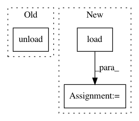

a0abcd0905c7655d27e2d7159a8ab269a1c6ed0f,unittests/test_environments.py,TestEnvironment,test_load_restore,#TestEnvironment#,87
Before Change
self.assertModulesLoaded(self.environ.modules)
self.assertTrue(self.environ.is_loaded)
self.environ.unload()
self.assertEqual(self.environ_save, renv.EnvironmentSnapshot())
self.assertEqual(os.environ["_var0"], "val0")
if fixtures.has_sane_modules_system():
self.assertFalse(
After Change
assert not self.environ_other.is_loaded
def test_load_restore(self):
snapshot, _ = env.load(self.environ)
os.environ["_var0"] == "val1"
os.environ["_var1"] == "val1"
os.environ["_var2"] == "val1"
os.environ["_var3"] == "val1"
In pattern: SUPERPATTERN
Frequency: 3
Non-data size: 3
Instances
Project Name: eth-cscs/reframe
Commit Name: a0abcd0905c7655d27e2d7159a8ab269a1c6ed0f
Time: 2019-10-07
Author: karakasis@cscs.ch
File Name: unittests/test_environments.py
Class Name: TestEnvironment
Method Name: test_load_restore
Project Name: eth-cscs/reframe
Commit Name: a0abcd0905c7655d27e2d7159a8ab269a1c6ed0f
Time: 2019-10-07
Author: karakasis@cscs.ch
File Name: unittests/test_environments.py
Class Name: TestEnvironment
Method Name: test_conflict_environ_after_module_load
Project Name: eth-cscs/reframe
Commit Name: a0abcd0905c7655d27e2d7159a8ab269a1c6ed0f
Time: 2019-10-07
Author: karakasis@cscs.ch
File Name: unittests/test_environments.py
Class Name: TestEnvironment
Method Name: test_conflict_environ_after_module_force_load